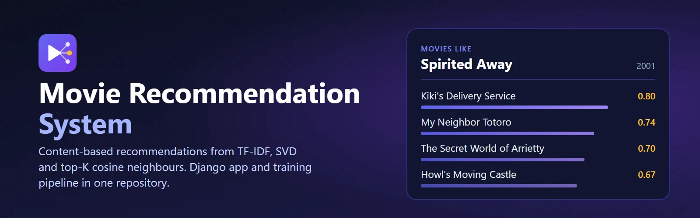
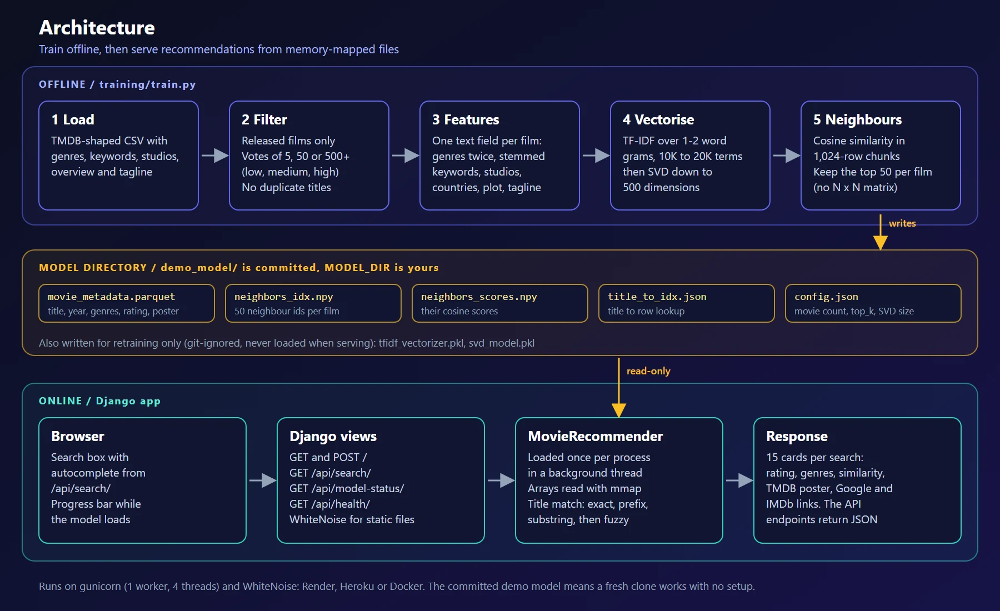
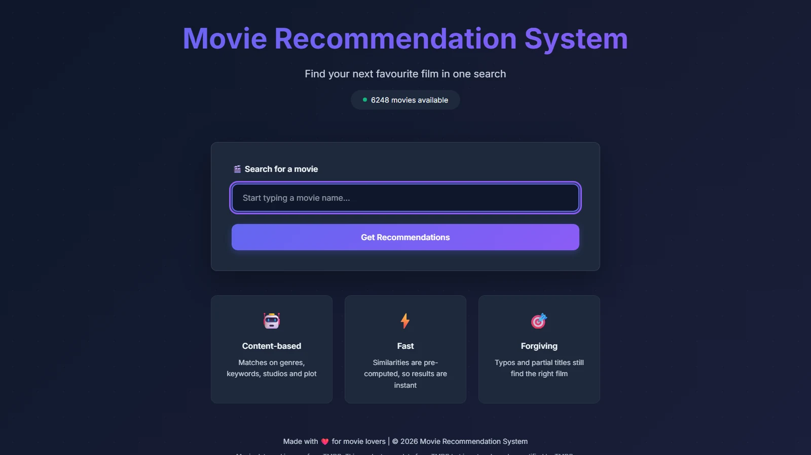
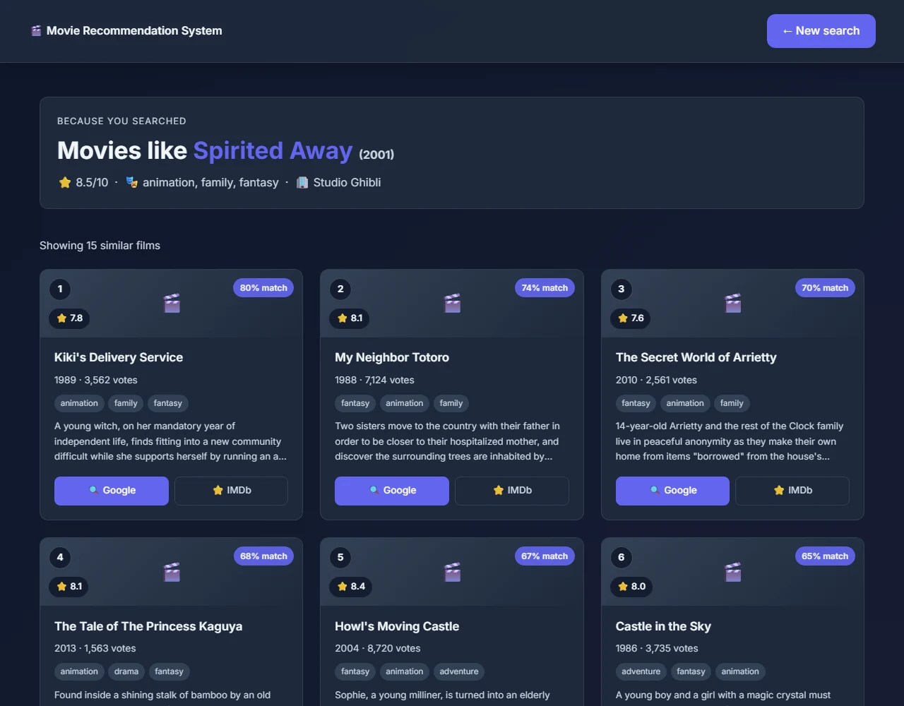
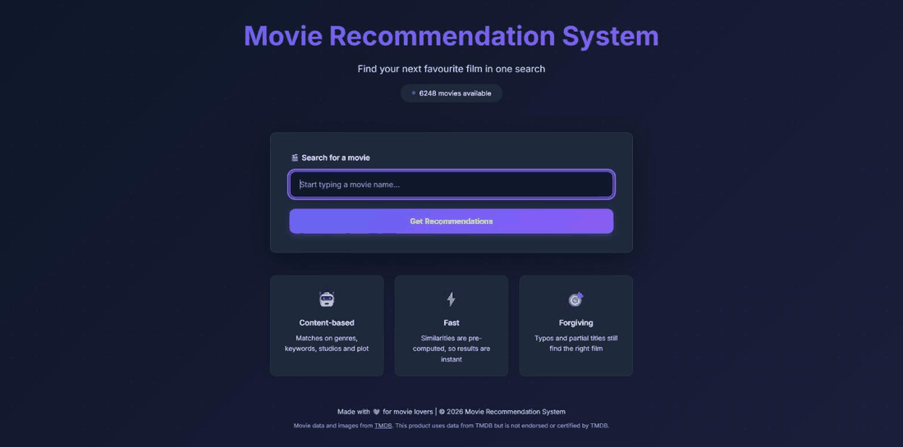

Movie Recommendation System
Project Overview
The Movie Recommendation System is a content-based recommender made of two parts that work together: a training pipeline that turns a TMDB-shaped CSV into a small model, and a Django app that serves it. It combines TF-IDF vectorization, SVD dimensionality reduction and top-K cosine neighbours, so a search is a single memory-mapped row lookup that takes about a millisecond.

Instead of matching keywords, it compares what films are made of: genres, keywords, studios, countries, plot overview and tagline. The trainer reads the full TMDB dataset (1.49 million rows), keeps the films that clear a vote threshold, and writes a model of about 26,000 films in under a minute. A 6,248-film demo model ships in the repository, so a fresh clone works with no setup.
The Challenge
Building a recommendation system that works at scale presents several key challenges:
- Computational Scale: Comparing every film with every other grows quadratically: 50,000 films means 2.5 billion pairs
- Quality vs. Coverage: Balancing comprehensive coverage with recommendation relevance
- Cold Start Problem: Providing recommendations without user interaction history
- Performance: Answering a search in milliseconds without computing similarity at request time
- Memory Efficiency: A dense float32 similarity matrix for 50,000 films is about 10 GB
- Feature Engineering: Capturing meaningful movie attributes for accurate matching
Technical Architecture

Feature Engineering → TF-IDF → SVD (500 dimensions) → Top-50 Cosine Neighbours → Memory-Mapped Lookup
Core ML Pipeline
Machine Learning
Backend & Storage
Data Processing
Key Features
Advanced Content-Based Filtering
- Rich Feature Set: Genres, keywords, production companies, countries, plot summaries, and taglines
- Weighted Features: Strategic weighting of genres and primary production companies
- Stemming & NLP: Linguistic processing for better semantic matching
- Quality Scoring: Intelligent ranking combining ratings and vote counts
Scalability & Performance
- Three-Tier Quality Filtering: Low (5+ votes), Medium (50+ votes), High (500+ votes)
- SVD Dimensionality Reduction: Compresses up to 20K TF-IDF terms to 500 dimensions
- Top-K Neighbour Storage: Keeps the 50 nearest films per title instead of an N x N matrix. At 26,326 films that is 16 MB of files, where a dense float32 matrix would be about 2.8 GB
- Chunked Computation: Similarity is computed 1,024 rows at a time, so the comparison step stays bounded
- Safe Data Formats: Parquet, NumPy and JSON, memory-mapped. Nothing is unpickled when serving
User Experience
- Forgiving Title Matching: Exact, prefix, substring, then fuzzy matching, with "did you mean" suggestions
- Real-Time Search: Autocomplete suggestions as you type
- Library Filters:
training/infer.pyfilters by year range, rating and genre, and can re-rank for diversity - Rich Metadata: Ratings, genres, production companies, release dates
- External Integration: Direct links to Google Search and IMDb
- Poster Images: Loaded from TMDB at render time with a fallback. None are stored in the repository
Screenshots
Search

Results

Implementation Highlights
class MovieRecommender:
"""Serves recommendations from precomputed neighbours"""
def _load_similarity(self):
# Memory-mapped: a request reads one row, not the whole file
self._neighbor_idx = np.load(self.model_dir / 'neighbors_idx.npy', mmap_mode='r')
self._neighbor_scores = np.load(self.model_dir / 'neighbors_scores.npy', mmap_mode='r')
def _candidate_neighbours(self, movie_idx, limit):
indices = np.asarray(self._neighbor_idx[movie_idx])
scores = np.asarray(self._neighbor_scores[movie_idx])
keep = indices != movie_idx # never recommend the movie itself
return indices[keep][:limit], scores[keep][:limit]
def get_recommendations(self, movie_title, n=15):
# Exact, then prefix, then substring, then fuzzy
matched = self.find_movie(movie_title)
if not matched:
return {'error': 'Movie not found', 'suggestions': self.suggest(movie_title)}
movie_idx = int(self.title_to_idx[matched])
indices, scores = self._candidate_neighbours(movie_idx, n)
recs = [self._movie_payload(i, s) for i, s in zip(indices, scores)]
return {'query_movie': matched, 'recommendations': recs}Training Pipeline
The repository includes the pipeline that builds the model, so you can train on your own TMDB-shaped catalogue:
from training.train import MovieRecommenderTrainer
trainer = MovieRecommenderTrainer(
output_dir='./models',
n_components=500, # SVD dimensions
top_k=50 # neighbours stored per film
)
df, neighbors = trainer.train(
'path/to/TMDB_movie_dataset_v11.csv',
quality_threshold='medium', # 50+ votes
max_movies=50000
)
# Written to ./models:
# - movie_metadata.parquet
# - neighbors_idx.npy, neighbors_scores.npy
# - title_to_idx.json, config.json
# - tfidf_vectorizer.pkl, svd_model.pkl (retraining only)Performance Metrics
System Capabilities
| Configuration | Movies | Training Time | Peak Memory | Model Files |
|---|---|---|---|---|
| Small (demo model) | 6,248 | 31 s | 2.5GB | 3.8MB |
| Default | 26,326 | About 1 min | 2.5GB | 16MB |
| Large | 100,000 | 4.3 min | 3.9GB | 61.5MB |
Measured on the TMDB v11 dataset (1.49 million rows). Peak memory is mostly the 658MB CSV being read, not the model. A recommendation takes about 1.1ms in every row, because it reads one precomputed row.
Live Demo
See the System in Action
Type a partial title, pick a suggestion, and get fifteen similar films with match percentages, ratings and genres.

Deployment Options
The system is deployment-ready with configurations for multiple platforms:
Quick Deploy to Render (Free Tier)
# 1. Push to GitHub
git push origin master
# 2. Connect to Render (auto-detects render.yaml)
# 3. Set ALLOWED_HOSTS for a custom domain (SECRET_KEY is generated)
# 4. Deploy. The committed demo model is found automatically,
# and /api/health/ is the health check.Also Supports
- Heroku: Procfile included
- Docker: Train a model, then
docker build; runs on any container host - Local:
pip install,migrate,runserver, and the demo model just works
Challenges & Solutions
Challenge 1: Memory Explosion with Large Models
The first design stored the full similarity matrix and densified it when the app loaded the model: about
10GB for a 50,000 film catalogue.
Solution: The trainer now keeps only the top 50 neighbours per film, computed in 1,024-row chunks,
and the app memory-maps the arrays. A 26,326 film model is 16MB and a search reads one row.
Challenge 2: Bugs That Only Appeared With Real Data
Genres never displayed because parquet list columns load as NumPy arrays, which failed an
isinstance(value, list) check, and release years were read off the wrong end of an ISO date.
Both failed silently.
Solution: A regression test for each, plus manage.py check --deploy in CI, because a
settings error stops Django before any test can run.
Challenge 3: Poor Recommendation Quality at Scale
On the full TMDB catalogue, recommendations included obscure films with 2-3 votes.
Solution: Three-tier quality filtering (low, medium, high by vote count) and a quality
score combining rating and vote count, so the model only contains films people actually rated.
Challenge 4: Cold Start - No User History
Content-based filtering doesn't require user history, but how to bootstrap?
Solution: Rich feature engineering (genres, companies, plot, keywords) allows
high-quality recommendations from the first query without any user interaction data.
Production Readiness
A review pass in September 2026 fixed the gaps between a working demo and something you can deploy:
| Area | Before | After |
|---|---|---|
| Startup | Crashed on a missing log directory | Starts on a fresh clone |
| Model memory at 50K films | About 10GB (dense matrix) | About 20MB of neighbours, memory-mapped |
| Fresh clone | No model, so no recommendations | 6,248 film demo model included |
| Health check | 503 while loading, which could kill a deploy | 200 "starting" while loading, 503 only on failure |
| Tests | None | 58, plus lint and deploy checks in CI |
Future Enhancements
- Version 2.1: User authentication, personal watchlists, rating system, recommendation history
- Version 2.2: Collaborative filtering using user interaction data
- Version 2.3: Hybrid recommendations combining content-based + collaborative
- Version 3.0: Deep learning with neural collaborative filtering
- Long-term: Real-time learning from user feedback, contextual recommendations (time/mood)
Key Learnings
- Feature engineering matters more than algorithm choice: adding studio features improved recommendations more than days of parameter tuning
- Quality filtering is essential at scale: a catalogue of 1M films is meaningless if most have fewer than 5 votes
- Store only what you serve. Top-K neighbours beat a full similarity matrix by orders of magnitude, and memory-mapped arrays keep serving cheap
- User experience (fuzzy matching, posters, external links) transforms a "cool demo" into a useful tool
- Documentation is part of the product. Numbers in a README should be measured, because stale ones are the first thing a reader checks